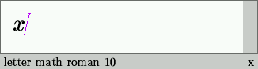
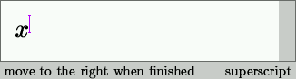
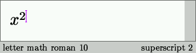
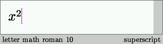
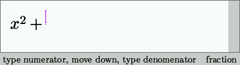
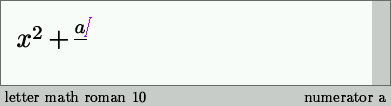
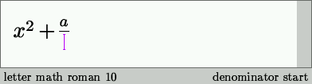
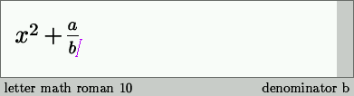
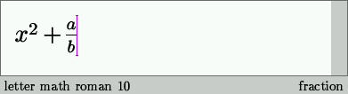

Chapter 6
Typing mathematics
In order to enter math mode you may type $. You may recognize that you indeed entered math mode, by the looking at the cursor's color or the footer. Also, the second icon bar now contains a lot of icons for the creation of mathematical formulas. The changes are illustrated in the following picture.
Notice that there are alternative ways to enter math-mode, using the mathematical icon menu. This menu allows you for instance to start a new full line formula, a numbered formula, or vertical lists of formulas or equations.
Once you are in math mode, you may use the icons on the second icon bar, or their keyboard equivalents, to create mathematical formulas. For instance, in order to create a superscript, you have to type ^, followed by the desired superscript. In order to finish the superscript, you have to push the cursor key ->. This process is illustrated below.
|  |  |
|  |  |
For users of TeX/LateX who are used to the { and } accolades for delimiting the scope of a superscript, it may be surprising that you have to type -> in order to finish the superscript. In fact, this is part of a general philosophy behind TeXmacs, which stipulates that the editor should be natural to use from the graphical point of view. In this philosophy, the cursor keys are the most natural choice for positioning the cursor. Similarly, the fraction a/b may be entered by typing esc F a down b ->.
|  |
|  |
|  |
|  |
|  |
Copyright (C) 1999, 2000 by Joris van der Hoeven.
This webpage is part of GNU TeXmacs and the larger GNU project. Verbatim copying and distribution of it is permitted in any medium, provided this notice is preserved. For more information or questions, please contact Joris van der Hoeven.
Free Software Foundation, Inc., 59 Temple Place - Suite 330, Boston, MA 02111, USA